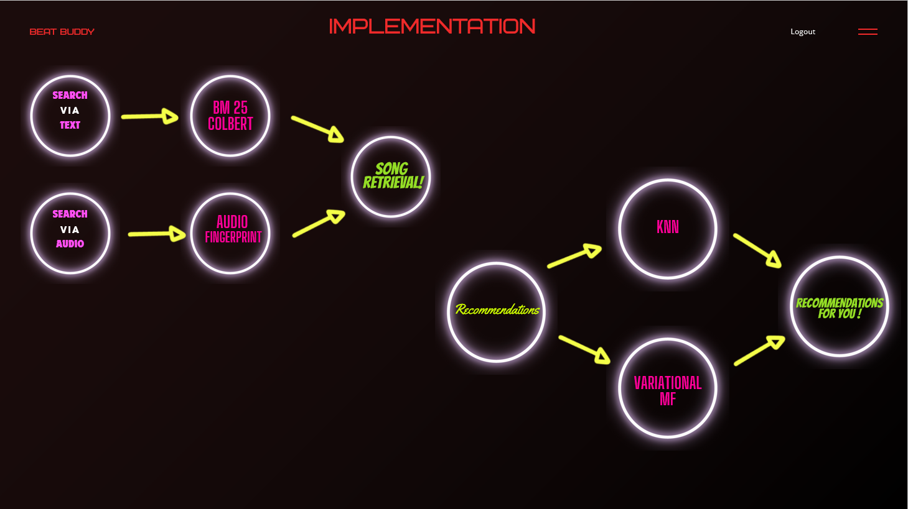

Introducing BeatBuddy, a versatile music discovery tool designed to enhance how you interact with music. Whether you're searching by song title, artist, album, or even specific lyrics, BeatBuddy makes finding your favorite tunes effortless. Our innovative feature lets you explore music through random audio clips, not only identifying the song but also suggesting tracks with similar beats. This allows for a personalized and exciting way to discover music that truly resonates with you.
Watch our introductory videoBeatBuddy was created to tackle the challenge of navigating the vast ocean of music available today. With so many choices, finding music that strikes the right chord can be daunting. Our solution offers a streamlined, intuitive approach to music discovery, enhanced by a deep understanding of your preferences. By maintaining user profiles based on your ratings, BeatBuddy tailors recommendations specifically for you, ensuring that every song suggested aligns with your taste.
Imagine a tool that not only quickly identifies any music playing around you but also opens doors to new musical landscapes perfectly suited to your style. That's the magic of BeatBuddy. Dive into a personalized music experience that is as unique as you are, and let us make your journey through the world of music seamless and delightful. Try BeatBuddy today and start your adventure into a world where every note, beat, and lyric feels like it was handpicked just for you.
Learn about the sophisticated technology and algorithms that power BeatBuddy. Our system not only suggests new music but also understands your musical preferences in depth. For a detailed view into our technical infrastructure and methods, check out our Technical Details.
Interested in running BeatBuddy on your own machine? Follow these step-by-step instructions to set up the environment and get everything running locally:
git clone https://github.com/tamu-edu-students/csce-670-beatbuddy.git
npm install for Node.js environments and pip install -r requirements.txt for Python environments.cd web/frontend and start the server with npm start.python app.pyTake a look at some screenshots of BeatBuddy in action:
Get to know the brilliant minds behind BeatBuddy. This section includes information about our team members, their roles, and how their contributions shape the project.
Click the link below to try BeatBuddy in action. Experience the future of music discovery and find your next favorite song today!
Note:For the best experience, we recommend using a desktop browser and enabling insecure content (we apologize for any inconvenience). You may also notice significant latency differences between our production server and local servers due to resource limitations.
Try it out